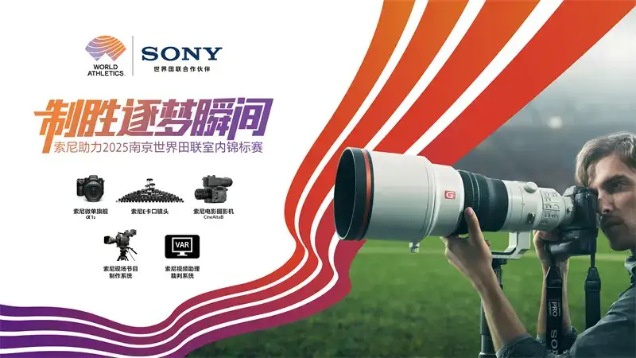
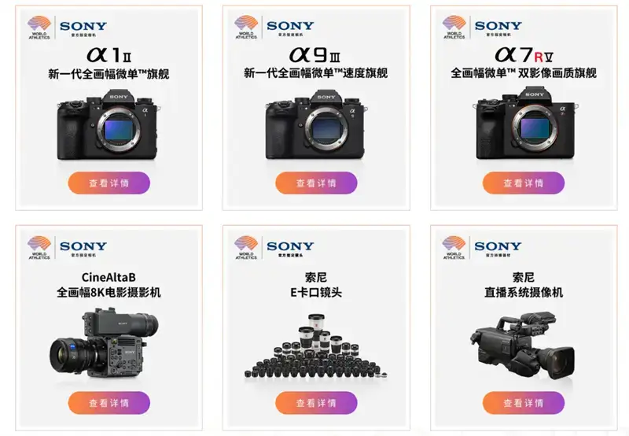
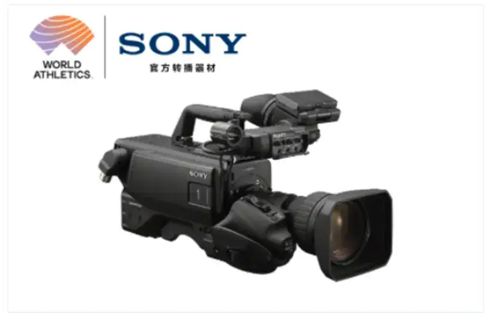
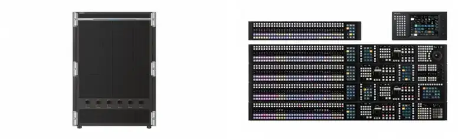
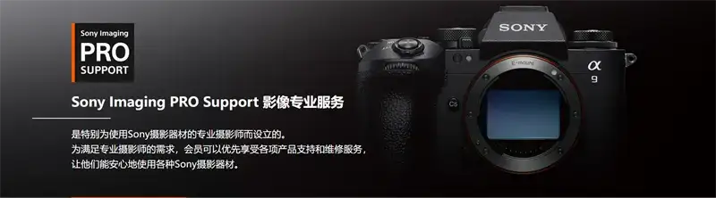
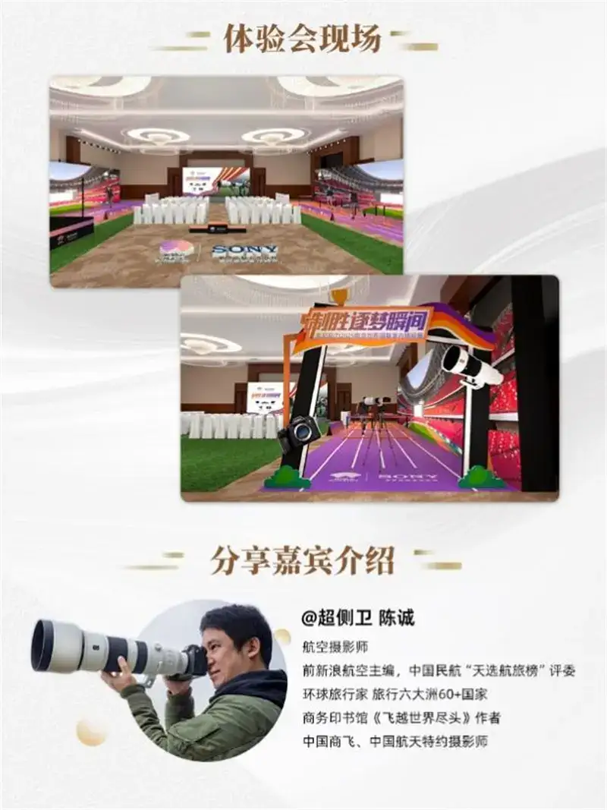

In 2024, Sony and World Athletics formally signed a global partnership agreement. Sony will be the official technical partner of the World Athletics series from 2024 to 2026, and work with World Athletics to help track and field thrive. The 2025 Nanjing World Athletics Indoor Championships is about to begin. This is the first time China has hosted the World Athletics Indoor Championships. It marks a further breakthrough for China in international track and field, and it has greatly sparked the public's enthusiasm for sport. As an official partner, Sony will use advanced imaging solutions during the Nanjing event to provide solid support in broadcast, photo coverage, and the video assistant referee system. It will also use leading technology and a professional team to provide on-site Sony Imaging PRO Support, so that viewers around the world can feel the great moments of track and field.

Sony supports the 2025 Nanjing World Athletics Indoor Championships
The official camera and lenses: Sony helps photographers freeze the great moments
In this event, the official cameras and lenses, led by the Alpha 1 II and the Alpha 9 III, will be a strong help to photographers. As Sony's flagship products, they bring together many of Sony's advanced imaging technologies, show great strengths in sports photography, and help photographers lock on the subject and catch the moments of chasing a dream.
The Sony AI chip has real-time auto-recognition focus. It can track the eye, and it can also recognize the shape of the body. In fast scenes such as sprinting, it keeps the focus sharp, so the subtle expressions and moves of the athletes are recorded precisely.
High-speed burst and pre-shot give an unprecedented way to catch fast motion in sports. The Alpha 1 II shoots about 30 frames per second, and the Alpha 9 III resets the industry standard with about 120 frames per second of blackout-free high-speed burst. Together with a pre-shot feature that records up to about 1 second before you press the shutter, they let you freeze countless great moments easily. Sony mirrorless cameras are clearly the tool a photographer needs to win on the field.
Sony has also built a complete lens ecosystem, with more than 79 native E-mount lenses covering focal lengths from ultra-wide to super-telephoto, to meet every shooting need on the field. There is the new FE 400-800mm F6.3-8 G OSS super-telephoto zoom, excellent for catching athlete detail at a distance, and the wide FE 16-35mm F2.8 GM lens, with a unique advantage in showing the grand scenes of the arena. Sony's large lens family gives professional photographers and content creators a rich set of tools, and helps them catch the decisive moments of athletes fighting hard, and show the passion and charm of the sport to viewers around the world

The official photographic equipment
Sony's professional imaging and sports technology support: fair competition and a better sports entertainment experience
As an official partner, Sony also uses its leading imaging technology to provide broadcast support and technical systems, and to add real power to the viewing experience and to the fairness and accuracy of the event. On one side, Sony works on all sides with advanced imaging technology and solutions to provide professional broadcast support and lift the viewing experience. On the other, Sony sports technology provides advanced, professional officiating technology to support accurate judging, and becomes a strong force for the authority and professionalism of the event.
With its deep technical base, Sony aims to provide first-class sports entertainment support, so that more viewers can feel the charm of sport on the screen, and feel the passion and tension of the field. This event will use as many as 3 broadcast trucks built around Sony equipment, to support the broadcast with high quality, safety, and reliability: two 4K trucks and one HD truck. The three trucks carry more than 50 Sony HDC broadcast-system cameras, which use advanced high-speed imaging to record very fast motion clearly, so viewers do not miss the great moments. The HD truck uses the Sony HDC-2580 system camera and the Sony MVS-6000 switcher. The two 4K trucks use the Sony HDC-4300, HDC-3500, and HDC-5500 system cameras and the Sony XVS-9000 switcher, and for the first time they will try the Sony flagship BRC-AM7 PTZ camera, with AI tracking and smart framing, for smart tracking shots. The flexible switching between Sony's professional imaging gear and its many cameras gives viewers a highly realistic sense of the live event. Watching on the screen feels like being there, and it greatly improves the whole viewing experience.

The HDC broadcast-system camera

The XVS-9000 4K/3G/HD multi-format IP live video switcher & the ICP-X7000 control panel for the XVS and MVS-X series
In sports technology, Sony provides advanced, professional officiating technology and services to help sports events set international standards, and it is already widely used in many top world events. During the Nanjing indoor championships, Sony will provide a video replay assistant officiating system, which gives important support to the fairness and accuracy of the event. Through 8 fixed cameras and the feed of 40 on-site broadcast cameras, the system catches every detail of the race in real time, gives the referees precise replay evidence at key moments, reduces wrong calls, and helps make fair decisions. Sony China's sports engineers will also work with the team and equipment sent by the British company Hawk-Eye Innovations to provide professional event service and technical support. Through this advanced officiating technology, Sony not only gives solid technical support for the smooth running of the event and ensures the fairness and accuracy of the results, but also plays a key role in moving track and field toward more professional, scientific development.
Sony Imaging PRO Support is open, to protect the stable running of the gear
To keep the gear and systems running steadily during the event, Sony will use the Sony Imaging PRO Support program to give registered photo journalists around the world round-the-clock professional technical support. From March 20 to 23, 2025, Sony set up an event media service station in the media center of the athletics hall at the Nanjing Sports Training Center. It prepared more than 100 full-frame flagship bodies, including the Alpha 1 II and Alpha 9 III, and 200 GM lenses, for the media to borrow when needed. Besides borrowing cameras, lenses, and other gear, it will provide professional services such as cleaning and maintenance, and battery and charging support. This keeps the gear of sports journalists in a steady state, lets the gear perform at its best, and protects the normal work of sports photography.
On-site services:
1. On-site gear loan. Each registered media journalist may borrow at most 2 bodies, with no limit on lenses, and accessories as needed. (Subject to the gear on hand at the service center.)
2. Cleaning and maintenance. The site provides Sony imaging gear cleaning as many times as needed, to keep the gear in good condition.
3. Battery and charging support. The site provides spare batteries and charging, so photo journalists can shoot without worry.
* Note: please bring your event registration pass to check in.
Service hours and location:
Service center: in the media center of the athletics hall at the Nanjing Sports Training Center.
Service hours: March 20 to 23, 2025. Product loan hours: March 20 to 23, 2025.
Last return time: 23:30, March 23, 2025.

Using technology to spark the emotion of competition, Sony helps start a new wave of watching and sport for all
Besides the professional imaging equipment, technology, and service provided for the event organizers and for professional media journalists and photographers, Sony, as the official camera and lens, also uses its cameras as a medium. Through online and offline lectures and sharing events, it works with creators on and off the field to catch, record, and publish more moments of chasing a dream, more moving moments, and more of the spirit of sport. It helps the spread of the Chinese indoor athletics event, draws more people to indoor track and other sports, and encourages active participation in sport.
For Sony Imaging PRO SUPPORT members (limited to 20) and Sony platinum and gold members (limited to 29), Sony prepared an exclusive viewing and experience event. Invited members can not only come to the field and feel the fighting spirit of the athletes, but also experience the strong performance of Sony imaging gear in depth, and enjoy exclusive member service.
For Sony imaging professional members (limited to 50) and Sony fans (limited to 100), Sony prepared an experience event for the new full-frame lenses SEL400800G and SEL16F18G. The event invited the well-known photographer Chen Cheng to share on site the story of Sony mirrorless cameras and high-speed photography, and it prepared new gear for shooting and exchange, so users can feel the charm of Sony imaging products for themselves.
Also, to encourage people to take part in sport in more varied ways, Sony launched a public interaction on its official social platforms. It encourages users to share shots of themselves or others in motion, and gives away free tickets, so more people can feel the passion and power of a top world track event up close. It also set up an experience zone at the event, where visitors can try many advanced imaging products, led by the new Sony FE 400-800mm F6.3-8 G OSS full-frame super-telephoto zoom. By completing the check-in tasks, they can also win badges, T-shirts, cups, and other gifts.

Through this full imaging-technology support for the Nanjing World Athletics Indoor Championships, Sony fully showed its strength and its innovative spirit as a leader in imaging technology. By bringing together advanced full-frame mirrorless cameras, the E-mount lens group, professional cameras, and broadcast technology, it gives gear support to photographers and content creators, gives viewers around the world an excellent viewing experience, and passes on the exciting passion and emotion of sport.
As a creative entertainment company built on a solid technical base, Sony will keep deepening its exploration and work in digital sports and sports entertainment, keep expanding the uses of advanced technology, and, through close work with more sports events and related bodies, help raise the fairness and appeal of competition, and help sport thrive. Sony believes that the power of technology will make sport more exciting, so that people who love sport can feel both the charm and passion of competition, and the lift and strength of movement itself.